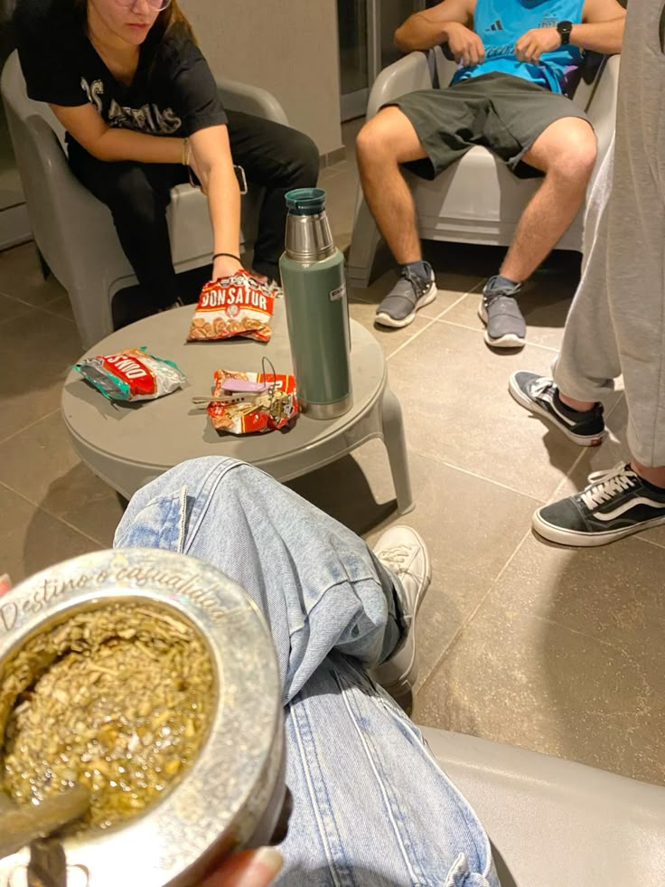

sus charlas

Cuando nos juntamos a tomar mate, siempre aparece algún tema de conversación. Empezamos hablando de cómo estuvo el día, qué hicimos, qué nos pasó o qué tenemos para contar. También de hsbla de chismes, las anécdotas, los problemas.
Aprovechamos esos momentos para pedir consejos, contar algo que nos preocupa o simplemente ponernos al día con las personas que queremos. Otras veces hablamos de cualquier cosa, nos reímos y pasamos horas hablando sin darnos cuenta.
lo lindo del mate es que nunca sabemos cómo va a terminar una charla. Podemos empezar hablando de algo sin importancia y terminar hablando de todo. Porque, al final, el mate es una excusa para juntarnos, compartir nuestras cosas y disfrutar de un buen momento con los demás.